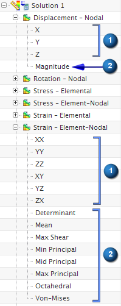

结果中的数据分量
在求解过程中计算的结果表示物理量，这些物理量可能是：
-
标量，比如压力和温度
-
矢量，比如位移和热,流
-
张量，比如应力和应变
对于标量结果，将直接从求解器结果文件中读取仅有的一个数据分量；对于矢量和张量结果，则有多个数据分量
|
 |
|
矢量或张量分量将直接从求解器结果文件中读取。(作为张量分量列出的切应变是工程应变) |
|
|
通过 NX 从矢量或张量中计算的物理量 |